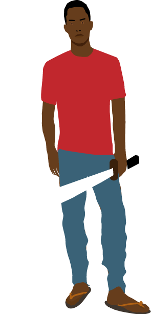

Mungiki
Minions: 500,000
Headquarters: Central and North America
Although Kenya’s Mungiki hasn’t made any impact outside of their home nation, they are still so violent and terrifying that they need to have a spot on this list. The group is half crime syndicate and half religion, rejecting all European influence in favor of tribalism and brutality. The Mungiki preys on the most helpless members of society, occupying the slums of Nairobi and extorting residents for protection money. They also dominate the taxi industry with an iron fist, murdering and beheading anybody who dares to drive into their territory. If you’re on the wrong side of the Mungiki, you can expect to be horrifically mutilated by machete-wielding gang members before your body is publicly set on fire as a warning to others.